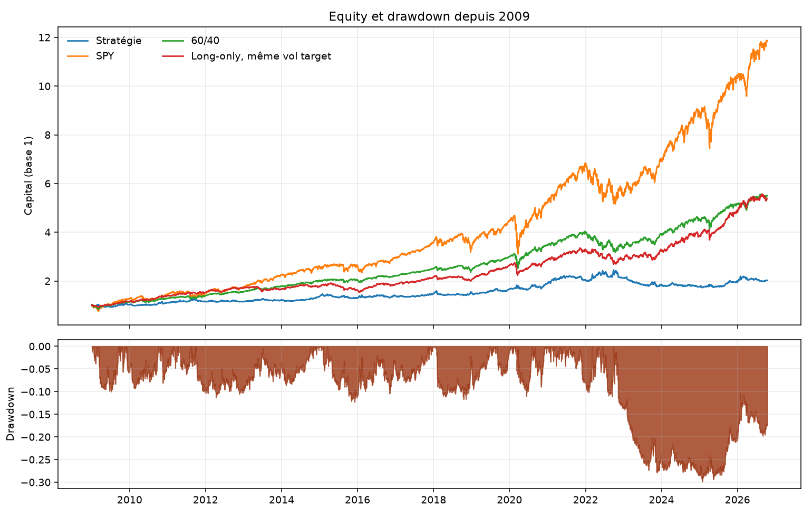
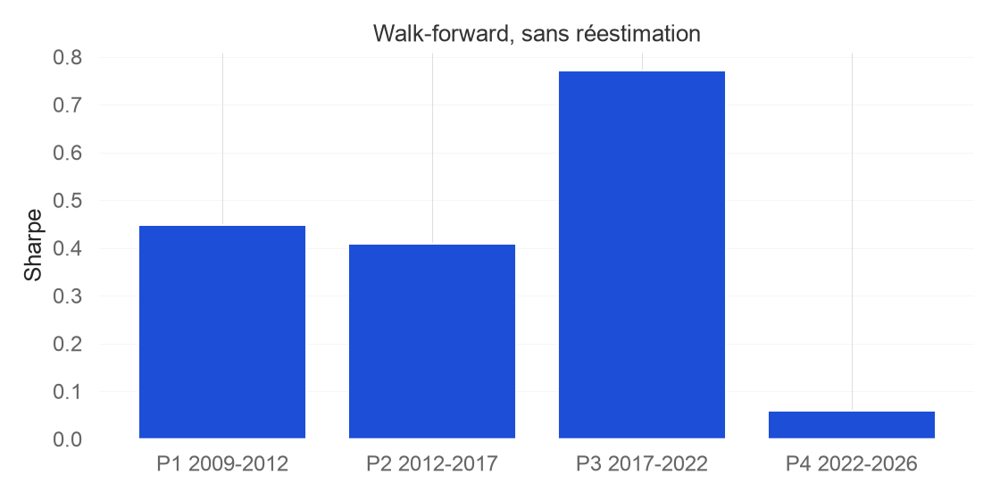

Abstract. This note reports a pre-registered implementation of Robert Carver's systematic trading framework — EWMAC trend, carry, forecast scaling and capping, handcrafted weights, an instrument diversification multiplier, a no-trade buffer, and a 13% volatility target — on fourteen US ETFs. No parameter was changed after the results were seen. From January 2009 to 13 October 2026 the strategy has a Sharpe ratio of 0.41, a CAGR of 4.1% and a maximum drawdown of −29.9%. SPY, a daily-rebalanced 60/40, and a long-only book run through the same engine at a constant forecast of +10 have Sharpe ratios of 0.88, 0.99 and 1.00. The signals subtract value relative to always being long. Transaction costs and the close-to-close fill do not account for the gap. The result is kept as a documented rejection on this universe. An Alpaca paper-trading loop runs the same calculation without retuning it.
Le cadre de Robert Carver (Systematic Trading, Advanced Futures Trading Strategies) combine une tendance lente, un carry, une cible de volatilité et un filtre de turnover. Il a été écrit pour des futures. Cette note mesure ce que devient ce cadre, sans modification après coup, sur un univers d'ETF américains que l'on peut porter en paper trading.
La question est fermée avant le calcul des performances : à paramètres figés, les signaux ajoutent-ils quelque chose à une position toujours longue, au même risque, dans le même moteur ?
L'univers compte quatorze ETF, choisis en 2026 parmi des fonds encore cotés. Actions américaines : SPY, IWM. Actions internationales : VGK, EWJ, EEM, EPP, EWC. Obligations : IEF, TLT, TIP, LQD. Matières premières : GLD, DBC. Devises : UUP. SHY a été retiré avant le backtest : sa volatilité, proche de 1,5 % par an, est incompatible avec un plafond de levier à 2×. TIP est en tendance seule : son carry, construit sur un rendement réel, est structurellement biaisé sur 2011–2022.
Les règles de tendance sont trois EWMAC, fenêtres 8/32, 16/64 et 32/128. Le carry des actions est le rendement de dividende sur douze mois moins le T-bill trois mois. Le carry des obligations utilise un proxy FRED (DGS7 pour IEF, DGS20 pour TLT, BAMLC0A0CMEY pour LQD). GLD, DBC, UUP et TIP n'ont pas de carry. Les taux FRED sont décalés d'un jour : à la date t, on n'utilise que ce qui était publié.
La volatilité est une EWMA de span 35, mélangée à 70/30 avec sa moyenne longue, puis bornée par un plancher estimé sur le passé seul. Chaque signal est mis à l'échelle pour que sa valeur absolue moyenne vaille 10, puis écrêté à ±20. La combinaison renormalise les poids quand une règle manque. Le multiplicateur de diversification (FDM au niveau des règles, IDM au niveau des instruments) vaut 1 / √(w′Σw), avec les corrélations négatives ramenées à 0 et un plafond à 2,5. Les poids d'instruments sont handcraftés : 20 % actions US, 20 % actions internationales, 25 % obligations, 25 % matières premières, 10 % devises.
La position cible, avant buffer et avant levier, est
N* = Capital × 0,13 × F × w × IDM / (10 × σ × P)
où F est le forecast combiné, σ la volatilité annualisée et P le prix non ajusté. Le capital est celui du jour. Le buffer de 10 % ne trade que si la position sort de la bande autour de N*, et il ramène au bord de la bande. Le levier brut est plafonné à 2× après le buffer. Les coûts sont un spread de 2 points de base multiplié par 1,5, plus le borrow des shorts. Les commissions sont nulles, comme sur les ETF US chez Alpaca.
Aucun de ces choix n'a été revu après lecture des performances.
Les prix viennent de Tiingo (clôture, clôture ajustée, dividendes). Les fichiers n'ont pas d'ouverture. La position fixée à la clôture t gagne donc le rendement total clôture-à-clôture jusqu'à t+1, dividendes inclus. Un passage d'ordre à l'ouverture du lendemain laisserait passer le gap de la nuit. Le backtest est, sur ce point, légèrement favorable à la stratégie.
La chauffe commence en janvier 2007. Les métriques commencent le 2 janvier 2009, une fois la volatilité, les scalaires et les corrélations estimables. 2008 reste dans la chauffe. Le Sharpe est √256 × μ / σ, avec un écart-type échantillon. Le Calmar reporté par le projet est Sharpe / |drawdown maximum|. Le Calmar usuel, CAGR / |drawdown maximum|, est donné à côté.
Quatre fenêtres sont lues sans réestimer aucun paramètre : 2009–2011, 2012–2016, 2017–2021, 2022–octobre 2026. Trois références partagent le même calendrier : SPY en buy-and-hold, un 60/40 SPY/IEF rééquilibré chaque jour sans coût, et un livre long-only passé dans le même moteur avec un forecast constant de +10.
Le code compte 244 tests. Les scalaires, le FDM, l'IDM, le buffer et le plafond de levier sont des fenêtres expansives ou des décalages d'un jour : une grandeur en t n'utilise pas t+1.
Fenêtre du 2 janvier 2009 au 13 octobre 2026, 4 472 séances.
| Livre | Sharpe | CAGR | Volatilité | Drawdown max |
|---|---|---|---|---|
| Stratégie | 0,41 | 4,1 % | 11,6 % | −29,9 % |
| SPY | 0,88 | 15,2 % | 17,9 % | −33,7 % |
| 60/40 | 0,99 | 10,2 % | 10,4 % | −21,0 % |
| Long-only, forecast +10 | 1,00 | 10,1 % | 10,2 % | −19,8 % |
La stratégie a un skewness de −0,58 et un hit rate de 53,7 %. Le levier brut moyen est de 1,72×, le maximum de 2,00×. Le turnover est de 24,1 fois le capital par an. Le coût de transaction, exprimé en Sharpe, vaut 0,063. La limite de vitesse retenue dans l'architecture, un tiers d'un Sharpe espéré de 0,5, vaut 0,167. Le Calmar du projet vaut 1,37. Le Calmar usuel vaut 0,14.
Le chemin de capital part de 100 000 $ le 3 janvier 2007, chauffe comprise, et finit à 227 345 $ le 13 octobre 2026. Le CAGR de 4,1 % est celui de la fenêtre 2009–2026.

| Fenêtre | Sharpe | CAGR | Drawdown max |
|---|---|---|---|
| 2009–2011 | 0,45 | 5,2 % | −10,1 % |
| 2012–2016 | 0,41 | 3,6 % | −12,3 % |
| 2017–2021 | 0,77 | 8,2 % | −11,7 % |
| 2022–2026 | 0,06 | −0,1 % | −29,9 % |

| Règle | Sharpe | Turnover | Drawdown max |
|---|---|---|---|
| EWMAC 8/32 | 0,05 | 44× | −28,1 % |
| EWMAC 16/64 | 0,34 | 23× | −28,7 % |
| EWMAC 32/128 | 0,49 | 13× | −29,8 % |
| Carry rapide (span 5) | 0,18 | 3,7× | −56,8 % |
| Carry lent (span 20) | 0,17 | 2,6× | −58,7 % |
| Classe | Sharpe de contribution |
|---|---|
| Matières premières | 0,45 |
| Obligations | 0,35 |
| Devises | 0,19 |
| Actions US | 0,14 |
| Actions internationales | −0,09 |
Le livre long-only, dans le même moteur, tourne 2,1 fois le capital par an. Son coût en Sharpe vaut 0,006.
Le fait qui tranche est l'écart entre la stratégie (Sharpe 0,41) et le livre à forecast constant +10 (Sharpe 1,00). Les deux partagent l'univers, les poids, l'IDM, le buffer, le plafond de levier et les coûts. Ce qui change, c'est le forecast. Sur cet échantillon, les signaux retirent de la performance à une position toujours longue.
Les coûts n'expliquent pas cet écart. L'écart de coût en Sharpe entre les deux livres est d'environ 0,06, quand l'écart de Sharpe réalisé est d'environ 0,6. Le fill clôture-à-clôture est légèrement favorable à la stratégie : il laisse à la position le gap de la nuit qu'un ordre à l'ouverture manquerait.
La tendance la plus rapide est presque nulle, et elle est la plus chère. La tendance la plus lente porte l'essentiel de ce que la tendance apporte. Le carry ETF, construit sur un dividende ou un rendement obligataire moins le cash, reste faible : son drawdown seul dépasse −55 %. Le carry qui équilibre la tendance, dans le livre de Carver, est celui des courbes de futures.
La quatrième fenêtre concentre le drawdown. De 2022 à 2026, la hausse des taux et le marché actions haussier forment un mauvais terrain pour un livre qui peut être short les actions et long la duration. Les trois fenêtres précédentes, positives et du même ordre, montrent que le résultat global n'est pas le produit d'une seule année aberrante en début d'échantillon.
L'univers est choisi en 2026 parmi des ETF encore listés. Les fonds fermés entre 2007 et 2026 n'y figurent pas. Ce biais de survie avantagerait plutôt les instruments retenus.
Les fenêtres, les poids, la cible de volatilité et l'univers restent ceux du design. Un second passage après ce tableau mesurerait la capacité à ajuster, pas la méthode.
Le backtest répond à la question de recherche. La boucle paper répond à une question d'ingénierie : le même calcul peut-il produire, chaque soir, une liste d'ordres traçable, sans être retouché.
Le courtier est Alpaca, compte paper uniquement, derrière une interface. Les clôtures restent celles de Tiingo. Alpaca sert aux cotations et aux ordres.
Chaque soir, après la clôture, la boucle met à jour les prix et les taux, recalcule le livre sur tout l'historique, taille les positions sur l'equity du compte paper, applique le buffer puis le plafond à 2×, arrondit à l'action entière, et écrit le plan dans SQLite (data/live/trading.db). Elle n'envoie rien. Le lendemain, à l'ouverture, les achats partent en limite au bid et les ventes en limite à l'ask. Un ordre non exécuté est re-peg toutes les cinq minutes, puis passé en market au bout de trente minutes.
Trois contrôles sont propres au paper. Si le P&L du jour passe sous −5 % du capital, aucun ordre nouveau ne part. Si le levier déjà détenu dépasse 1,5×, les ordres qui augmentent l'exposition sont bloqués et les réductions passent. Un ordre est écrêté à 1 % de l'ADV quand ce volume est connu. Le buffer mémorise la position d'avant levier, en actions fractionnaires, pour qu'un simple rescaling de levier ne relance pas un trade.
Cette boucle valide le pipeline. Le livre paper est celui des signaux. Le dimensionnement suit l'equity du compte, et le buffer part de zéro le premier soir : les premières séances ne reproduisent pas le chemin 2007–2026.
Un compte paper plat de 100 000 $, calculé sur la clôture du 13 octobre 2026, demande quatorze ordres et sort au plafond de 2×. L'IDM du jour vaut 1,91. UUP, forecast au plafond de +20 et volatilité faible, représente l'essentiel du notionnel : c'est le vol targeting sur un ETF peu volatil, ramené par le plafond.
| Instrument | Forecast | Actions cibles |
|---|---|---|
| UUP | +20,0 | +1 863 |
| DBC | +18,4 | +604 |
| EWJ | +7,3 | +27 |
| SPY | +2,9 | +5 |
| EEM | −1,5 | −7 |
| EPP | −5,9 | −46 |
| LQD | −7,9 | −117 |
| EWC | −8,8 | −60 |
| GLD | −9,1 | −23 |
| VGK | −11,5 | −59 |
| IEF | −11,8 | −225 |
| TLT | −13,1 | −145 |
| IWM | −14,2 | −48 |
| TIP | −19,3 | −401 |
La boucle est lancée toutes les cinq minutes par un agent macOS (python -m systrade.execution tick), à l'heure de New York. À la main, les mêmes étapes sont :
pip install -e ".[live]" python -m systrade.execution close --dry-run python -m systrade.execution close # soir, après 16h30 ET python -m systrade.execution open # ouverture du lendemain python -m systrade.execution work # re-peg, puis market
Le dry-run n'appelle pas Alpaca. La boucle réelle ne parle qu'au compte paper.
Les futures de volatilité, le carry de courbe sur les matières premières, le carry de devises par différentiel de taux, le passage à Interactive Brokers, et les règles breakout et accélération restent dans le backlog. Ils demandent un autre courtier, un module de roll et un historique de courbes. Les ajouter après ce tableau, pour faire remonter le Sharpe, casserait le protocole. Ils décrivent le terrain sur lequel le cadre a été écrit.
Sur quatorze ETF américains, de 2009 à octobre 2026, une implémentation pré-enregistrée du cadre de Carver gagne 4,1 % par an pour un Sharpe de 0,41. Elle reste sous SPY, sous un 60/40, et sous le même moteur privé de ses signaux. Le résultat tient à l'univers et à la forme du carry. La boucle paper reprend ce calcul tel quel.
Tearsheet QuantStats : reports/tearsheet.html. Version markdown : docs/research_note.md.